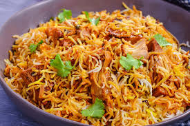

Biryani

A world-renowned Indian dish, biryani takes time and practice to make but is worth every bit of the effort. Long-grained rice (like basmati) flavored with fragrant spices such as saffron and layered with lamb, chicken, fish, or vegetables and a thick gravy. The dish is then covered, its lid secured with dough, and then the biryani is cooked over a low flame. This is definitely a special occasion dish.
There is much debate of how this dish came to be, but most agree that its origins began in Persia as a rustic rice-and-meat dish and then traveled to India. The various recipes of biryani were then born, mainly where there was culinary influence from Muslim foods, particularly in the city of Hyderabad in south India, but also along the southern coast. Biryani's many, many variations depend on where the dish is based. Some differences are subtle while others are distinguished by added or substituted ingredients.
Ingredients:
- Chicken – 800 Gms
- Oil – 1 ½ Tbsp
- Whole Garam Masala:
- Cumin Seeds: 1 Tsp, Cloves: 10, Green Cardamom: 6
- Cinnamon: 3 inches, Black Pepper: 15
- Ginger Garlic Paste – 3 Tsp
- Salt – 1 Tsp
- Red Chilli Powder – 1.5 Tsp
- Turmeric Powder – 1 Tsp
- Coriander Powder – 1 Tsp
- Garam Masala Powder – 1.5 Tsp
- Yogurt – 2 Tbsp
- Brown Onion – 1 Tbsp
- Tomatoes – 1 Cup (Without skin)
- Water – 200 ml (for curry)
- Rice Boil Ingredients
Rice 2 Cups
Garam Masala for Rice:
Bay Leaves: 2, Cloves: 5, Cinnamon: 2″
Cumin Seeds: 1 Tsp, Aniseed: 1
Salt – 2 teaspoon (For Rice)
- Layering Ingredients
Green Masala: Coriander and Green Chilies (for Rice layering)
Yellow food color: 2 Pinches
Fresh lemon: ½
Saffron milk – 3 Tsp
Biryani Essence – ⅓ Tsp
Instructions:
- Thinly slice the onion. Thick onion slices will not make tasty curry.
- Always use fresh ginger garlic paste.
- Be accurate in using spices
- Fully cook your meat.
- Use Basmati rice to make presentable and aromatic.
- Be careful, when you soak biryani rice. (Don't soak more than 15 minutes if you are using basmati rice)
- Fully drain the water from boil rice before making the biryani layer.
- Rice should be boiled 90% before making the layer. (Never fully boil biryani rice before making layer)
- When making the layer, make sure the curry should not be watery. If it is then cooked on high heat.
- Make sure when biryani get ready, then don't run the spoon from the middle. Alway run spoon from sides to avoid rice break.